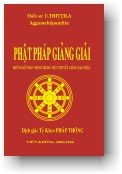

|
BuddhaSasana Home Page |
Vietnamese, with Unicode Times font |
|  |
Phật Pháp Giảng Giải Đại
Trưởng Lão U
Thittila Nguyên tác: "Essential
Themes of Buddhist Lectures", |
-ooOoo- LỜI GIỚI THIỆU Ngài U Thittila không những uyên thâm pháp học, pháp hành ở Myanmar - xứ sở có truyền thống Phật Giáo Nguyên Thủy lâu đời và thuần tuý nhất, mà Ngài còn là một trong những vị Như Lai sứ giả thành công trong việc truyền bá chánh pháp sang các nước phương Tây sớm nhất. Chính nhờ những kinh nghiệm sâu rộng đó mà những bài giảng của Ngài vừa giản dị, vừa uyên áo, chuyển tải được những vấn đề cốt tử nhất của đạo Phật cho người Tây phương vốn chuộng khoa học và lý trí. Thực ra, muốn nghiên cứu Phật giáo một cách nghiêm túc, chính xác và thiết thực cũng nên có thái độ văn minh hợp lý chứ không nên quá cả tin và tự mê hoặc. Biển Phật pháp mênh mông, người học Phật cần "quý hồ tinh bất quý hồ đa" thì mới có thể liễu giác được, còn cứ "dĩ danh số vi giải" thì không tránh khỏi nông cạn phù phiếm trong một mớ kiến thức quanh co đa tạp. Ưu điểm những lời giảng của Ngài U Thittila là vừa thích hợp với người mới nghiên cứu Phật học, vừa hợp cho những ai muốn chuyên sâu vào pháp hành Giới - Ðịnh - Tuệ. Có lẽ vì vậy mà sư Pháp Thông đã phát tâm lui về ẩn cư trong một hang động ở rừng Viên Không ngày đêm nghiền ngẫm, tra cứu, phiên dịch để giới thiệu với chúng ta tài liệu có giá trị nầy. Trong tài liệu có vài đoạn nói về thiền định và thiền tuệ còn lúng túng, chưa rõ ràng, có lẽ vì tiếng Anh không đủ từ ngữ để diễn đạt những vấn đề quá sâu sắc như vậy. Hơn nữa trong bản tiếng Anh một số thuật ngữ chuyên môn không có Pàli đối chiếu, nên khi dịch ra tiếng việt rất khó tìm được từ tương đương cho chính xác. Cũng may thiền tự nó vượt qua ngôn ngữ nên dù ngôn ngữ diễn đạt thế nào đi nữa cũng chỉ có giá trị gợi ý mà thôi, người hành thiền phải quên hết ngôn từ để tự mình khám phá cái thực tại vô ngôn bất khả tư nghì ấy mới được. Thành thật tán dương sư Pháp Thông đã cống hiến dịch phẩm nầy vào Phật sự hoằng dương chánh pháp nói chung và góp phần xây dựng rừng thiền Viên Không nói riêng ngày thêm phong phú. Viên Không, ngày 01-06-2000 -ooOoo- LỜI NGƯỜI DỊCH Ðại sư U Thittila, Aggamahàpandita (bậc đại trí tuệ), tác giả của những bài giảng trong cuốn sách này, sanh năm 1896 tại Pyawbwe, một tỉnh thuộc miền trung Miến Ðiện. Thời thơ ấu, dù mới chỉ lên 7 tuổi, Ngài đã có duyên lành với Phật pháp và thường lui tới tu viện Padigon (vihàra), nơi đây Ngài được trưởng lão U Kavinda - một cao tăng thông thái và khả kính của tu viện tận tình dạy dỗ. Nhờ tư chất thông minh và hiếu học, nên trước khi thọ giới làm sadi năm 15 tuổi Ngài đã thuộc khá nhiều kinh điển, đặc biệt các bộ Abhidhamma (Vi Diệu Pháp), Mahàsatipattthànasutta (Kinh Ðại Niệm Xứ) và văn phạm Pàli.. .. Năm 1916, vừa tròn 20 tuổi, Ngài thọ Tỳ Khưu với trưởng lão U Okkantha, rồi cùng thầy vào rừng hành thiền. Không lâu sau đó Ngài bước vào đại học Masoyein Monastery tại Mandalay. Ở đây, sau những năm nghiên cứu chuyên sâu, với sự dẫn dắt của vị thầy thứ hai và cũng là vị thầy nghiêm khắc nhất - trưởng lão Àdiccavamïsa, Ngài được chọn trong số 5 ngàn thí sinh như thủ khoa ưu tú - của toàn xứ Miến năm 1918. Năm năm sau (1923) Ngài là một trong bốn thí sinh tốt nghiệp của kỳ thi cuối cùng (pariyatti sàsanahita) giữa các đại học tu viện. Sau một thời gian giảng dạy tại đại học Rangoon, Ngài bắt đầu sự nghiệp hoằng pháp của mình qua các nước Tây phương, đặc biệt là ở Anh quốc trong suốt 14 năm từ 1938 đến 1952. Với kiến thức uyên thâm về Phật học, cộng với kinh nghiệm của nhiều năm hành thiền và bản tánh khiêm tốn, độ lượng, Ngài đã thành công rất nhiều trong việc truyền đạt những lời dạy của Ðức Phật đến với những người Tây phương khó tính. Tại những nước đi qua, Ngài đã để lại những ấn tượng tốt đẹp về một bậc chân tu thông thái. Những cống hiến to lớn và không mệt mỏi (90 tuổi Ngài vẫn đảm nhiệm việc giảng dạy) của Ngài trong việc đào tạo các thế hệ trẻ và hoằng dương chánh pháp trên thế giới đã được chính phủ Miến Ðiện ghi nhận và phong tặng những tước hiệu cao quý cho Ngài. - 1956 Aggamahàpandita (bậc đại trí
tuệ). Ðạo Phật có ba phương diện: pháp học, pháp hành và pháp thành; đây cũng là mục tiêu theo đuổi của Ngài trong suốt cuộc đời tu tập. Quan tâm lớn nhất của Ngài là làm sao duy trì những lời dạy của bậc đạo sư không để bị xuyên tạc và mai một đi, như lời Ngài thường nhắc nhở chúng ta: "Giống như những con đường bỏ phế không ai sử dụng sẽ mất dấu như thế nào, thì con đường (Bát Chánh) mà Ðức Phật chỉ cho chúng ta cũng vậy, sẽ biến mất nếu không có người bước lên trên đó". Cuốn sách này ra đời nhân kỷ niệm 100 năm của đại sư (1896-1996), và Ngài qua đời một năm sau đó (ngày 3 tháng 1, 1997). Thật là một mất mát to lớn cho hàng hậu học chúng ta. May mắn gặp được tác phẩm quý giá này, sau khi đọc và cảm nhận giá trị của những bài giảng sinh động của Ngài, người dịch không nệ tài hèn đã cố gắng phiên dịch ra việt ngữ để chia sẻ với những ai hữu duyên, nghĩ rằng ít nhiều nó cũng đem lại đôi điều lợi ích cho người đọc. Trong quá trình phiên dịch, tất cả bản thảo đã được thầy Viên Minh đọc lại và hiệu đính những chỗ sai sót, người dịch vô cùng cảm kích truớc sự quan tâm chiếu cố của thầy trong điều kiện còn Phật sự đa đoan. Ngoài ra, người dịch cũng thành kính tri ân sư thúc Hộ Pháp đã cho những lời giải thích xác đáng bổ túc cho dịch phẩm, hơn nữa còn ủng hộ tài chính cho việc in ấn. Người dịch cũng thành thật tri ân cô Liễu Vân (Phật tử Bửu Long) đã hỗ trợ tài chính và công sức trong việc đánh vi tính và sửa bản in. Tất cả phước báu phát sinh do công đức phiên dịch xin chia đều đến tất cả. Cầu mong mọi người đều an vui hạnh phúc. Viên Không Thạch Ðộng, -ooOoo-
Ðầu trang |
Mục lục |
01 |
02 |
03 |
04 |
05 |
06 |
07 |
08 |
09 |
10 |
11 |
12 |
13 |
14 |
15 |
16 |
17 |
18 |
19 |
20 | |
Chân thành cám ơn Tỳ kheo Pháp Thông đã gửi tặng bản vi tính (Bình Anson, 08-2002)
Xem: Nguyên tác Anh ngữ
[Trở
về trang Thư Mục]
updated: 16-08-2002